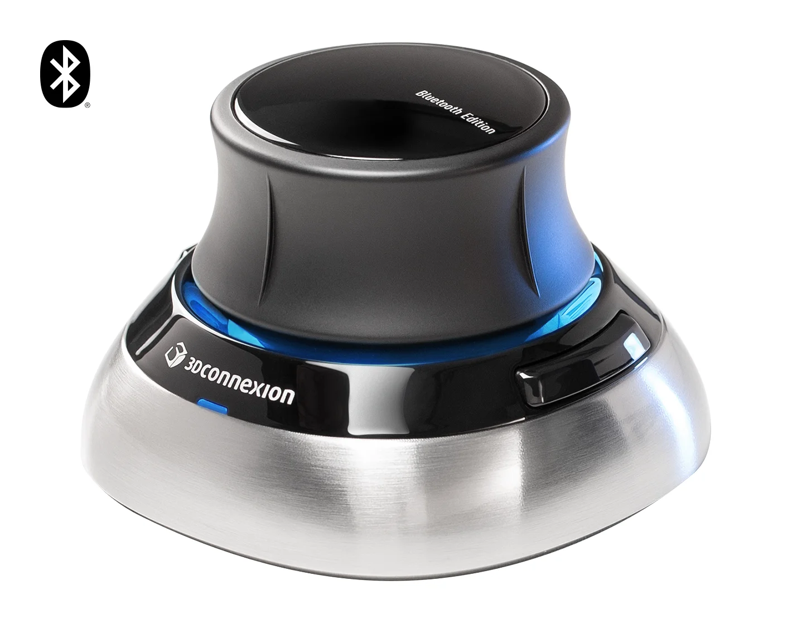
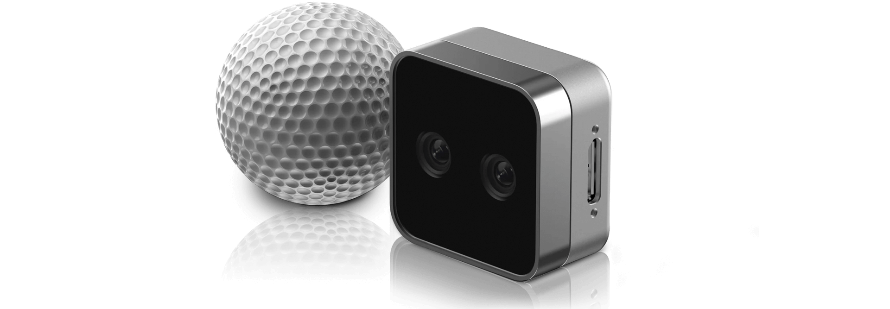

1. 배포 구조와 책임
1.1 Problem, Existing System & My Scope
기존 개발 실행에서는 MiMicX 프로세스와 장치 프로그램이 같은 Host 환경에 있었습니다. 배포 실행에서는 브라우저가 UI Gateway에 접속하고, 장치·로봇·카메라의 실제 runtime은 별도의 device-data 서비스가 소유했습니다. 브라우저 주소가 같고 화면이 열리더라도, 장치를 여는 프로세스의 파일시스템·라이브러리·사용자 세션은 이전과 달랐습니다.
제가 맡은 일은 Docker나 제품 설치 도구를 처음부터 만드는 것이 아니라, 기존 배포 제품에서 텔레오퍼레이션 장치와 카메라가 실제로 동작하도록 연동하고 실패 경로를 안정화하는 일이었습니다. 기존 SteamVR bridge의 배포·입력·진단을 보강하고, Quest/Pico에 Host OpenXR bridge를 적용했습니다. 장치 adapter, 배포 계약, UI 상태와 저장 경로를 함께 확인했으며, 수정과 검사는 AI의 도움을 받아 진행하고 실제 장치·로봇 동작은 직접 확인했습니다.
| 증상 | 바로 단정할 수 없었던 것 | 다음 관찰 지점 |
|---|---|---|
| SpaceMouse 두 대가 목록에 있지만 disconnected | USB 검출 실패인지 실제 open/read 실패인지 | raw path·구체 hidraw·open/read probe |
| Vive pose는 변하지만 trigger를 눌러도 로봇이 멈춤 | 로봇 모드 문제인지 버튼 입력 자체가 없는지 | Host OpenVR / Input action과 TeleT gate |
| WiVRn은 연결됐지만 Quest/Pico 후보가 없음 | 헤드셋 연결인지 runtime·focus·graphics 문제인지 | Host session과 bridge diagnostics |
| 카메라 등록 뒤 preview 공백 | 장치 frame이 없는지 HTTP·UI에서 멈춘 것인지 | handler frame → JPEG 응답 → img 갱신 |
처음부터 모든 증상을 Docker 권한 문제로 묶으면 장치별 차이를 놓칩니다. SpaceMouse가 enumerate되는 순간에도 read는 실패할 수 있었고, Vive의 위치가 보이는 순간에도 버튼은 전달되지 않았습니다. 따라서 작업의 출발점을 “기기가 보이는가”에서 어떤 데이터를 어느 프로세스가 실제로 읽고 있는가로 바꿨습니다.
1.2 Host / Container Architecture & Ownership
컨테이너는 Host 위에서 실행되는 격리된 프로세스 환경입니다. Host의 장치나 desktop 세션을 자동으로 모두 공유하지는 않지만, 필요한 장치·파일·통신 경로를 노출해 사용할 수 있습니다. 그러므로 “컨테이너는 VR 데이터를 받을 수 없다”는 결론은 맞지 않습니다. 이번 설계 판단은 어디에서 데이터를 읽는 것이 배포와 진단에 유리한가에 있었습니다.[D1]
Why 'Bridge'?
여기서 Bridge는 Host의 VR runtime과 컨테이너의 MiMicX 장치 API 사이를 연결하는 중계 프로그램을 뜻합니다. Host 쪽은 OpenVR/OpenXR API로 실제 pose·버튼·세션 상태를 읽고, 컨테이너 쪽은 그 결과를 공통 snapshot으로 받아 기존 장치 인터페이스에 연결합니다. 서로 다른 실행 환경이 각자의 책임을 유지한 채 데이터를 주고받도록 잇기 때문에 bridge라고 부릅니다. Docker의 컨테이너 통신용 bridge network와는 다른, application 수준의 연결입니다.[D2]
SpaceMouse처럼 device node를 노출하는 것만으로 VR 입력까지 해결되지는 않았습니다. SpaceMouse는 컨테이너의 hidapi가 장치를 직접 열 수 있었지만, Vive와 Quest/Pico 입력은 이미 Host의 SteamVR·WiVRn/OpenXR 세션이 처리한 결과였습니다. 이를 컨테이너에서 직접 읽으려면 장치 파일 외에도 runtime library·manifest·사용자 IPC·display·graphics와 focus 조건을 함께 맞춰야 했습니다.
실제로 OpenXR direct 경로를 복구할 때 manifest를 보이게 한 다음에는 그 안의 library 경로가 끊겼고, 이후에는 desktop display와 GLX 조건을 확인해야 했습니다. 이 문제를 매번 컨테이너 내부에 재현하기보다 정상 동작하는 Host 세션은 Host가 소유하고, MiMicX가 사용할 값과 준비 상태를 경계 밖으로 전달하는 쪽을 선택했습니다.
| 방식 | 함께 유지해야 하는 조건 | 이번 업무에서의 판단 |
|---|---|---|
| 장치 node 직접 접근 | node·권한·metadata·컨테이너 reader library | SpaceMouse·카메라에 적용; 불필요한 중계 프로세스를 추가하지 않음 |
| 컨테이너에서 VR runtime 직접 접근 | Host runtime의 library·IPC·graphics·사용자 세션 조건까지 연결 | direct 복구 과정에서 경로와 세션 의존이 연속해서 드러남 |
| Host collector + container client | Host runtime은 Host에서 실행; snapshot 형식·공유 경로·신선도 계약 유지 | Vive bridge를 보강하고 Quest/Pico에도 적용; runtime 수집과 MiMicX 제어 책임 분리 |
브리지는 USB 신호를 그대로 터널링하거나, Host의 전체 desktop 환경을 컨테이너에 복사하지 않습니다. pose·좌우·입력 active·focus·render·오류 상태를 전달하고, calibration과 로봇 목표 생성은 MiMicX에 남깁니다. 덕분에 Host에서 입력이 없는 문제와 컨테이너가 snapshot을 읽지 못하는 문제를 따로 조사할 수 있었습니다. 대신 Host service와 client를 함께 배포하고 protocol 호환성과 stale 입력을 관리해야 했습니다. 의존성이 사라진 것이 아니라, 의존성을 소유하는 위치와 전달할 계약을 명확히 한 선택이었습니다.
| 대상 | Host에 남긴 책임 | 컨테이너가 맡은 책임 | 선택 이유 |
|---|---|---|---|
| SpaceMouse | USB/HID node·udev 권한·sysfs identity | hidapi로 직접 open/read·입력 해석·arm binding | desktop VR 세션 없이 HID report로 읽을 수 있음 |
| RealSense / UVC | 물리 USB·전원·device node·metadata | SDK/handler·profile·frame·preview·capture | 노출된 USB/video node와 컨테이너 library로 접근 가능 |
| Vive | SteamVR/OpenVR·Input binding·user service | SteamVR snapshot client·진단·calibration·TeleT | 추적과 버튼 입력이 Host runtime 상태에 연결됨 |
| Quest / Pico | WiVRn/OpenXR worker·focus·GLX·frame loop | snapshot client·readiness·등록·binding | OpenXR 세션과 graphics를 하나의 Host worker가 소유 |
SpaceMouse와 카메라에는 별도의 Host bridge를 만들지 않았습니다. 반대로 VR에서는 Host에서 정상인 SteamVR/WiVRn의 세션을 컨테이너 안에 다시 재현하기보다, Host collector가 읽은 pose·input·상태를 명시적인 snapshot으로 전달했습니다. 브리지는 값을 전달하는 경계이지, calibration이나 로봇 제어를 대신하는 프로그램이 아닙니다.
브라우저는 등록·보정·모드 전환의 의도를 API로 전달하고 결과를 표시합니다. device-data는 장치를 열고 샘플을 읽으며 binding과 실제 runtime 상태를 관리합니다. data-studio와 model-runtime은 같은 split 제품에 있지만, 이 입력 경로의 장치 소유자가 되지는 않습니다. 같은 제품 안에 있다는 이유로 서로 다른 서비스의 Python 메모리나 열린 장치 handle이 공유된다고 가정할 수 없었습니다.
1.3 Device Visibility, Dependencies & Permissions
직접 접근 장치는 세 조건을 따로 맞춰야 했습니다. 첫째는 컨테이너에서 device node와 metadata가 보이는가, 둘째는 그 장치를 열 권한이 있는가, 셋째는 이미지에 실제 reader library가 있는가입니다. Host에서 udev 설정을 바꿔도 컨테이너에 node가 나타나는 것은 아니며, node가 보여도 hidapi나 camera runtime import가 실패하면 읽을 수 없습니다.
| 계층 | SpaceMouse | 카메라 | 실패 시 해석 |
|---|---|---|---|
| 장치 노출 | /dev/hidraw* 및 /dev 접근 | /dev/video*·USB bus 접근 | Host 정상·container 미노출이면 배포 mount부터 비교 |
| 식별 metadata | /run/udev·sysfs branch | udev·stable V4L2 path·serial | 목록을 찾더라도 특정 실물과 연결되지 않을 수 있음 |
| 이미지 의존성 | hidapi | pyrealsense2 또는 OpenCV/V4L2·libusb | 장치 설치와 Python import 성공은 별개 |
| 권한 / 배포 설정 | HID node 접근권한과 device-pack 조건 | USB/video 접근권한과 device-pack 조건 | 권한 확대만으로 identity·runtime 오류는 해결되지 않음 |
당시 compatibility 구성은 /dev 공유와 read-only udev metadata를 사용했고, compose와 제품 manifest의 장치 접근 설정을 함께 맞췄습니다. 이 설정은 해당 배포를 재현하는 조건입니다. 광범위한 장치 권한을 주는 것과 필요한 장치의 올바른 데이터를 읽는 것은 다른 문제이므로, 권한 설정을 장치별 원인 분석의 대체 수단으로 삼지 않았습니다.[D1]
공통 compose 설정을 여러 서비스가 상속하더라도 실제 장치 소유자는 device-data였습니다. 따라서 UI 컨테이너에서 node가 보인다는 검사만으로 끝내지 않고, 장치 API가 실행되는 서비스의 mount·환경변수·library를 확인했습니다. 소스에 적힌 설정과 현재 실행 중인 컨테이너의 설정도 따로 비교했습니다.
1.4 Image Build & Optional Runtime Dependencies
장치 연결을 시험하기 전 이미지 build부터 막힌 경우도 있었습니다. 기본 hardware package의 pysurvive 의존성이 Gooey를 거쳐 wxPython을 끌어왔고, slim 이미지에서 GUI package를 source build하다 실패했습니다. 뒤이어 push가 실패했지만, 먼저 해결할 원인은 네트워크가 아니라 이미지 tag 자체가 생성되지 않은 build 실패였습니다.
Default hardware dependencies
→ legacy Vive / pysurvive
→ Gooey → wxPython source build → slim image build failure
After separation
default image: common runtime dependencies
explicit legacy Vive extra: pysurvive dependency chainlegacy Vive/libsurvive 지원을 기본 의존성에서 분리해 선택 extra로 남겼습니다. 지금 사용하는 SteamVR bridge와 legacy libsurvive 경로도 구분해야 했습니다. Vive라는 장치 이름이 같다고 모든 Vive 관련 package를 기본 이미지에 넣으면, 사용하지 않는 실행 경로의 GUI 의존성이 다른 장치 배포까지 막습니다.
의존성 선언만 고친 뒤에도 오래된 *.egg-info가 build context에 들어가면 이전 package metadata가 다시 사용될 수 있었습니다. 생성 metadata를 context에서 제외하고, 실제 새 이미지를 만든 뒤 release에 반영했습니다. 이 사건으로 재현해야 할 대상이 Git의 소스뿐 아니라 의존성 metadata와 이미지 build 입력 전체라는 점을 확인했습니다.
2. SpaceMouse 식별과 연결 수명
2.1 SpaceMouse Identity: From Enumeration to a Concrete Node

당시 HID 목록에 표시된 모델 계열입니다. 상단 캡의 병진·회전과 버튼을 HID report로 읽습니다. 제품 사진이며 실제 시험 현장 사진은 아닙니다.

HID와 마찬가지로 컨테이너의 직접 장치 접근을 사용하지만, 데이터는 축·버튼이 아니라 카메라 frame입니다. 본문의 카메라 경로와 대비해 볼 수 있습니다.
두 SpaceMouse는 같은 VID/PID를 가졌습니다. VID/PID는 제품 종류를 찾는 데에는 유효하지만, 같은 모델 두 대 중 어느 장치를 왼팔에 연결했는지까지 설명하지 못합니다. 한편 Linux hidapi의 enumeration 결과가 /dev/hidrawN 대신 USB branch/interface token으로 반환되는 환경이 있었습니다. 목록용 identity를 그대로 open 경로로 취급하면 발견과 읽기가 갈라졌습니다.
먼저 sysfs의 hidraw 후보를 VID/PID로 좁히고, 각 후보의 실제 device 경로와 uevent를 raw USB branch에 대조했습니다. 일치하는 node를 찾으면 concrete hidraw path로 해석했습니다. raw path와 resolved path는 둘 다 남겼습니다. 전자는 선택한 물리 branch를 추적하는 데, 후자는 지금 실제로 열 node를 확인하는 데 필요했습니다.
| 값 | 용도 | 주의점 |
|---|---|---|
| VID / PID | 지원하는 제조사·제품 후보 검색 | 동일 모델 두 대의 개별 identity가 아님 |
| raw path | enumeration이 반환한 branch/interface 식별 | backend에 따라 실제 open 가능한 파일 경로가 아닐 수 있음 |
| resolved hidraw | 현재 OS에서 실제 열 device node | 숫자 N 자체를 영구 장치 이름으로 삼지 않음 |
| handle / saved params | 등록·worker에 선택 identity 전달 | catalog와 reader가 서로 다른 대상을 열지 않아야 함 |
| robot / arm binding | 해당 입력을 사용할 제어 대상 | 발견 순서가 arm 소속을 결정해서는 안 됨 |
여러 동일 제품 후보가 있는데 branch 일치를 확인하지 못하면 첫 VID/PID 후보를 반환하지 않도록 했습니다. 임의 선택으로 연결 표시를 살리면 잘못된 팔이 다른 컨트롤러 입력을 받을 수 있기 때문입니다. 실패를 명확히 드러내는 것이, 틀린 장치와 성공처럼 연결되는 것보다 올바른 동작에 가깝다는 판단이었습니다.
2.2 Open / Read Lifecycle & Dual-Device Binding
경로를 찾은 뒤에도 문제가 끝나지 않았습니다. 초기 probe는 open=True, read=False였고 뒤이어 not open이 발생했습니다. concrete path를 추가하는 첫 수정만으로는, raw handle을 먼저 시도해 성공처럼 반환한 객체를 그대로 사용하는 문제가 남았습니다.
open 후보는 concrete hidraw path를 앞에 두고 raw path를 뒤로 보냈습니다. hidapi의 표준 device().open_path() 경로를 우선하고, 생성 직후 accessor에서 닫힌 객체의 not open을 반환하면 해당 handle을 정리하고 다음 후보를 시험하도록 보강했습니다. Python 객체 생성 성공은 OS 장치가 실제 열린 상태라는 보장이 아니었습니다.
open 검증과 read probe도 같지 않습니다. accessor가 통과하더라도 실제 packet을 읽고 decode할 수 있는지 확인해야 합니다. 반대로 정지한 컨트롤러에서 축 값이 같다는 사실만으로 연결이 끊겼다고 판단해서는 안 됩니다. 오류, packet 접근, 연속 샘플의 값 변화와 사용자 조작을 각각 비교했습니다.
등록 이후에는 raw/resolved identity가 binding params와 runtime worker까지 이어지는지 확인했습니다. 두 대를 각각 조작해 대응하는 팔에 전달되는지 확인하고, 버튼 action mapping과 calibration도 분리해 봤습니다. 한 팔만 움직이는 현상은 USB 검출 문제와 달리 arm 소속·binding 경로를 다시 확인해야 했습니다. 최종적으로 두 SpaceMouse의 구분된 등록과 실제 텔레오퍼레이션을 확인했습니다.
3. Bridge 프로토콜과 데이터 계약
3.1 Shared Snapshot Transport & Consistent Reads
VR runtime을 Host에 두기로 한 뒤에는, 그 상태를 어떻게 컨테이너에 전달할지가 별도 설계 문제가 됐습니다. 장치 목록을 보여 주기 위해 OpenVR/OpenXR 세션을 매번 새로 여는 대신, Host collector 하나가 입력을 읽어 최신 snapshot을 게시하고 컨테이너가 이를 읽도록 했습니다.
빠른 샘플 경로는 공유 파일을 mmap으로 읽는 JSON snapshot이고, 상태·목록·최신값 요청 등은 Unix domain socket RPC로 나눴습니다. 여기서 shared memory는 공통 mount 경로에서 양쪽이 접근하는 memory-mapped file입니다. 매번 HTTP로 Host에 새 pose를 요청하는 구조나, 모든 장치 SDK를 컨테이너에 복제하는 구조와 다릅니다.
| 필드 | 크기 | 의미 |
|---|---|---|
| magic | 4 byte | SteamVR: SVRB / OpenXR: OXRB, 잘못된 transport 구분 |
| version / reserved | 2 + 2 byte | version 1 및 예약 필드 |
| sequence | 8 byte | 홀수: 갱신 중 / 짝수: 게시 완료 |
| timestamp_ns | 8 byte | writer가 기록한 Unix epoch nanoseconds |
| payload_len | 4 byte | header 다음 UTF-8 JSON의 byte 수 |
| device 또는 hand count / flags / padding | 2 + 2 + 2 byte | 장치 개수·상태 플래그·형식 padding |
writer는 header에 홀수 sequence를 먼저 쓰고 payload를 갱신한 뒤 짝수 sequence로 완료합니다. reader는 읽기 전 header가 완료 상태인지 확인하고 payload를 복사한 뒤 header를 다시 읽습니다. 두 sequence가 다르거나 홀수이면 그 사이에 갱신이 일어난 것이므로 재시도합니다. magic/version 불일치, payload가 파일 범위를 벗어나는 경우와 JSON 형식 오류도 정상 입력으로 통과시키지 않습니다.
이 검사는 읽기 도중 섞인 payload를 검출하는 application 수준의 일관성 검사입니다. 지연이나 제어 주기를 보장하는 장치는 아닙니다. collector가 멈춰도 마지막 파일은 남을 수 있으므로, 완결된 snapshot인지와 지금도 살아 있는 입력인지는 별도로 판단해야 했습니다.
3.2 Sample Semantics, Frames & Time
브리지는 pose 숫자만 넘기지 않습니다. 좌우·장치 identity·pose validity·입력 활성 상태와 runtime 상태를 함께 전달해야 컨테이너가 기존 장치 API로 해석할 수 있습니다. 단순히 “값 0”만 보내면 버튼을 누르지 않은 상태와 action 자체를 받지 못하는 상태를 구별할 수 없습니다.
| 데이터 | 의미 / 단위 | 다음 단계에서 필요한 이유 |
|---|---|---|
| Vive pose transform | tracking 기준의 3×4 transform, translation은 m | 행렬 회전·위치를 보존해 기존 calibration 경로로 연결 |
| OpenXR position / orientation | 선택 reference space의 m / quaternion (x,y,z,w) | 로봇 base 좌표와 곧바로 동일시하지 않음 |
| reference_space / side | LOCAL_FLOOR·LOCAL 등 실제 선택 공간 / left·right | 세션 공간과 양손 소속을 보존 |
| rpy_deg | 각도 표시용 Euler 표현, degree | quaternion과 표현·단위를 혼동하지 않음 |
| pose_valid / input_active | pose의 유효성 / 각 action의 활성 여부 | 0인 입력과 사용할 수 없는 입력을 구별 |
| bridge / session / render status | collector·focus·frame 제출 상태 | 연결 표시만으로 사용 가능한 장치를 만들지 않음 |
Host의 tracking 좌표를 읽은 뒤 로봇 명령으로 바꾸는 calibration과 binding은 기존 MiMicX 경로에 남겼습니다. 브리지가 추가됐다고 좌표를 로봇 base로 임의 변환하거나 pose를 로봇 목표값으로 바로 해석하지 않았습니다. 동일한 facade를 유지해 direct 실행과 bridge 실행의 차이를 transport 선택에 국한했습니다.
| 시각 | 용도 | 해석 범위 |
|---|---|---|
| header timestamp_ns / JSON timestamp | epoch ns / epoch s, 게시·신선도 진단 | ns 단위 저장은 ns 정확도의 측정이라는 뜻이 아님 |
| OpenXR predicted display time | 현재 frame에서 pose를 locate할 runtime 시간 | epoch timestamp와 수치 차이를 직접 지연으로 계산하지 않음 |
| episode / capture timing | 로봇·입력·영상 수집의 시간 정렬 | snapshot freshness만으로 수집 동기화가 입증되지는 않음 |
위 식의 두 시각은 모두 epoch seconds로 맞춥니다. SteamVR client의 기본 stale 기준은 2초이며 환경 설정으로 바뀝니다. 이는 정지한 collector의 오래된 값을 거절하기 위한 기준이지, 2초의 텔레오퍼레이션 지연을 허용한다는 제어 성능 목표가 아닙니다. 이 구현의 wall-clock 차이만으로 end-to-end 지연이나 제어 안정성을 증명할 수도 없습니다.
4. Host VR runtime 연동
4.1 SteamVR Bridge: Tracking, Actions & Backend Selection

상단 tracking 영역과 손잡이의 trigger·grip·trackpad는 서로 다른 입력 경로로 관찰합니다. Controller (2018) 제품군 참고 이미지이며 시험 장치의 세부 세대 증명용 사진은 아닙니다.

헤드셋 연결 이후에도 양손 pose·action·앱 focus를 확인해야 합니다. Host WiVRn/OpenXR 경로를 설명하기 위한 제품 사진입니다.
Vive의 pose와 버튼은 SteamVR/OpenVR에서 읽었습니다. Host bridge는 desktop 사용자 세션에서 runtime에 접속하고, 컨테이너는 SteamVR bridge client를 통해 장치 목록과 샘플을 받았습니다. 기존 calibration·TeleT API는 유지했습니다. 배포에서는 bridge를 명시적으로 선택하고, Host 개발 실행에는 direct OpenVR 경로를 남겼습니다.
SteamVR Input은 물리 버튼 번호를 곧바로 읽는 방식과 다릅니다. 앱이 사용할 trigger·grip·menu·trackpad 등의 action을 manifest에 선언하고, controller binding이 실제 입력과 action을 연결합니다. 앱 등록과 manifest 경로 설정 이후 action set을 갱신하고 action data를 읽어야 합니다. 앱 등록 성공, action handle 존재, action active는 서로 다른 확인입니다.[V1][V2]
bridge에는 SteamVR Input 경로와 legacy controller-state 경로를 함께 유지했습니다. role별 action이 비활성일 때 unrestricted action의 실제 origin이 어느 tracked device인지 확인하는 fallback도 다뤘습니다. 이때 양손 데이터가 첫 controller 한 대의 상태로 섞이지 않도록, check 응답도 요청한 identity에 해당하는 샘플을 골라야 했습니다.
단, fallback을 추가하는 것과 Host가 실제 입력을 주는 것은 다릅니다. bridge 파일과 catalog가 정상이어도 trigger action이 비활성이면 TeleT의 hold 조건을 열 수 없습니다. 이를 단순히 UI의 connected 표시나 pose 변화로 대신 확인하지 않았습니다.
4.2 Pose Works, Buttons Do Not: Revising the Hypothesis
Vive가 등록되고 Configuration의 좌표가 실시간으로 변했는데도, trigger를 누른 텔레오퍼레이션은 동작하지 않았습니다. 처음에는 모드 전환·배포 미반영·버튼 decode·binding을 순서대로 의심했습니다. 실제 로봇이 TeleT 상태인지와, trigger gate에 들어갈 값이 존재하는지를 나눠 보았습니다.
| 관찰 | 의미 | 배제하거나 남긴 판단 |
|---|---|---|
| Controller pose는 계속 valid | tracking 경로는 살아 있음 | 전체 SteamVR 시작·pairing 실패로만 설명할 수 없음 |
| legacy state: ok=false, packet=0, buttons/axes=0 | Host API 자체가 입력을 제공하지 못함 | MiMicX가 정상 버튼값을 버린다는 가설과 구분 |
| Input app 등록 성공, role / unrestricted action 모두 inactive | 대체 Input API도 사용할 값이 없음 | manifest 등록 성공만으로 복구됐다고 할 수 없음 |
| SteamVR known-good 버전으로 되돌린 뒤 입력 복구 | 당시 runtime 버전과 증상이 연결됨 | 해당 Linux NullHMD 환경의 외부 runtime 회귀로 판단 |
결정적인 비교는 MiMicX HTTP·Docker·bridge를 제외한 Host 전용 입력 monitor였습니다. legacy getControllerState뿐 아니라 SteamVR Input action도 직접 확인했지만 둘 다 입력이 죽어 있었습니다. 따라서 bridge나 버튼 mapping을 계속 수정하는 것만으로는 복구할 수 없었습니다. 정상 입력이 upstream에 존재하는지부터 확인해야 한다는 쪽으로 조사 방향을 바꿨습니다.
당시 Linux NullHMD 구성에서 SteamVR 2.16 계열을 사용하고 있었고, 이전 정상 계열로 되돌린 뒤 입력이 복구됐습니다. 이 결론은 그 시점의 Host 직접 재현과 버전 비교에 대한 것입니다. 현재 모든 SteamVR 환경의 호환성을 선언하거나 Docker bridge 자체의 지연·안정성을 측정한 결과는 아닙니다.
초기에는 WiVRn과 SteamVR 동시 실행도 의심했습니다. 그러나 버전을 되돌린 뒤에는 두 runtime을 켠 상태에서도 Quest/Pico와 Vive 동작을 확인했습니다. 그래서 “동시에 켜면 원천적으로 안 된다”는 설명은 최종 원인에서 제외했습니다. 다만 장애를 재현할 때는 한 runtime만 실행해 어떤 provider의 장치를 보고 있는지 분리하는 절차를 유지했습니다.
이 사건 이후에는 코드 diff뿐 아니라 정상 시점의 외부 runtime 버전도 비교 대상으로 삼았습니다. fallback은 지원되는 입력 경로를 넓히는 수단이고, runtime이 어떤 API에도 입력을 내주지 않는 상태를 숨기는 수단이 될 수는 없었습니다.
4.3 OpenXR Worker: Session, Focus & Frame Submission
Quest/Pico는 WiVRn에 연결됐다는 표시만으로 MiMicX 입력이 준비되지 않았습니다. WiVRn은 Linux PC와 standalone headset 사이를 연결하고, Host collector는 OpenXR를 통해 pose와 action을 읽습니다. MiMicX의 CONNECTED와 OpenXR의 FOCUSED는 같은 상태가 아닙니다. OpenXR session은 실행·표시·입력 focus의 lifecycle을 가지며, focus가 있어야 XR 입력을 받을 수 있습니다.[W1][X1]
Host collector는 기존 MetaQuestSessionWorker를 재사용했습니다. API 요청마다 별도의 probe session을 열지 않고 worker 하나가 세션을 소유하게 했습니다. 입력을 읽는 코드와 상태를 조회하는 코드가 각각 세션을 열면, 같은 runtime의 focus와 자원 상태를 놓고 서로 간섭할 수 있기 때문입니다.
왜 입력 수집에 rendering이 필요했는가
사용한 WiVRn 경로에서는 XR_KHR_opengl_enable에 맞는 graphics context와 유효한 composition layer 제출을 함께 유지했습니다. 화면을 사용자에게 크게 띄우지 않는 hidden GL context라고 해서 렌더링을 하지 않는 headless 경로와 같은 것은 아니었습니다. swapchain과 projection view를 준비하고 frame을 제출하는 루프가 실제 runtime 활성 상태와 연결돼 있었습니다. 이 조건은 사용한 WiVRn·OpenGL 구현의 선택이며 모든 OpenXR runtime의 절대 조건으로 일반화하지 않습니다.[X1]
worker는 action을 동기화해 trigger·squeeze·stick·button 값과 active 상태를 읽고, wait_frame → begin_frame으로 얻은 predicted display time에 손의 space를 locate했습니다. 선택한 app reference space에 대한 위치·orientation validity를 확인한 뒤 양손 snapshot을 구성하고 composition layer를 제출했습니다. controller pose가 있다는 사실과 trigger action이 active라는 사실을 별도 필드로 유지했습니다.
| 상태 | 뜻 | 다음 확인 |
|---|---|---|
| service_down / stale_snapshot | 파일 접근 실패 또는 최신 게시가 멈춤 | 서비스·공유 경로·collector 생존 |
| collector_unavailable / runtime_unavailable | placeholder 또는 실제 worker 기동 불가 | 배포된 collector·Python package·Host runtime |
| openxr_session_starting | worker가 시작됐지만 첫 유효 snapshot 전 | 세션 lifecycle과 초기화 진행 |
| session_not_focused | session은 있으나 입력 focus 미확보 | 헤드셋 활성·착용·앱 focus |
| render_inactive | 준비 상태에서 rendering 경로 비활성 | GL context·swapchain·제출 layer |
| ok | bridge의 freshness·session·render 기준 통과 | 각 손 pose/action과 binding·calibration·실제 조작 |
준비되지 않은 bridge를 정상 좌우 장치 두 개로 합성하지 않았습니다. diagnostics가 ok가 아니면 Quest/Pico catalog를 비우되 원인을 상태로 반환했습니다. 한 runtime의 오류가 전체 available API를 500으로 끝내 SpaceMouse 같은 다른 장치까지 가리는 문제도 분리했습니다.
기존 facade를 유지한 backend 선택
| 대상 / 선택 | 동작 | 운영에서의 의미 |
|---|---|---|
| Vive / bridge | SteamVR bridge 사용을 명시 | split 배포의 기본 선택 |
| Vive / openvr | 현재 MiMicX 프로세스에서 OpenVR 접근 | Host 개발 실행·직접 진단 경로 |
| Vive / auto | bridge 환경 힌트 등에 따라 우선 경로 선택; 실패 시 다른 경로 시도 | 최종 선택과 양쪽 실패 원인을 함께 확인 |
| Quest/Pico / bridge | Host OpenXR bridge를 사용 | 명시적으로 bridge 경로를 검증 |
| Quest/Pico / direct | MiMicX 프로세스가 기존 session worker 실행 | 개발·복귀 경로; 별도 세션을 동시에 열지 않음 |
| Quest/Pico / auto | socket과 shm이 모두 존재하면 bridge, 아니면 direct | 파일 존재는 선택 조건이고 health는 이후 별도 검사 |
Quest/Pico의 auto는 bridge가 현재 건강하다는 뜻이 아닙니다. 오래된 파일이 남아도 bridge가 선택될 수 있어 freshness·focus·render 진단이 필요합니다. 같은 auto라는 이름이라도 Vive의 예외 fallback과 OpenXR의 파일 기반 선택은 구현이 달랐으므로, 운영 상태에서 어느 backend가 선택됐는지 드러내도록 했습니다.
4.4 From Runtime Passthrough to a Working Host Collector
처음부터 bridge만 만든 것은 아닙니다. 중간에는 컨테이너에서 direct OpenXR를 열도록 runtime manifest와 Host library·IPC 경로를 맞췄습니다. manifest 파일을 보이게 한 뒤에는 그 안의 runtime.library_path가 가리키는 Flatpak library가 컨테이너에 없어 다음 단계에서 실패했습니다. 설정 파일이 존재하는 것과 설정이 가리키는 실행 자원을 사용할 수 있는 것은 달랐습니다.
| 단계 | 시도 / 관찰 | 다음 수정 |
|---|---|---|
| Direct runtime 참조 | manifest 누락을 고친 뒤 library path 미노출 | manifest와 library 존재를 각각 진단·mount 보강 |
| Bridge transport | socket·shm 게시 가능, collector는 placeholder | 실제 OpenXR 수집과 transport 검사를 구분 |
| Backend / 서비스 연결 | bridge 선택과 service active만으로는 입력 없음 | 기존 session worker를 Host collector에 연결 |
| Host 실행 환경 | SSH-forwarded display / llvmpipe를 물 수 있음 | 실제 desktop user·local display·NVIDIA GLX·Python 명시 |
| Local GPU 확인 이후 | NVIDIA renderer여도 single-buffer hidden window 실패 | double-buffer GLX context fallback |
| 최종 연결 | focus·render·양손 snapshot·catalog 정상 | 각 장치의 실제 TeleT 동작 확인 |
저는 WiVRn도 Vive처럼 Host bridge로 분리하면 운영하기 쉬운지 검토했고, runtime 이름에만 묶인 단순 poller보다 OpenXR session을 소유하는 경로로 확장했습니다. transport, backend 선택, Host service 배포, diagnostics, 실제 collector를 나눠 연결했습니다. 초기에 파일이 생기고 protocol 검사가 통과한 상태는 “Quest/Pico 입력 성공”이 아니라 placeholder를 운반할 수 있는 상태였습니다.
실제 collector는 올바른 Python 환경과 package 경로가 필요했습니다. 컨테이너 이미지에 코드가 있어도 Host service가 실행하는 Python에서 import할 수 없으면 worker는 기동하지 못합니다. Host에 배포한 package와 user service의 실행 환경을 함께 맞췄습니다.
그 다음은 graphics였습니다. SSH의 forwarded display와 software renderer를 피하고 실제 local desktop을 선택하도록 설치 경로를 보강했습니다. local NVIDIA renderer가 확인된 뒤에도 GLXFBConfig 실패가 남아, single-buffer hidden context 실패 시 double-buffer로 재시도하도록 했습니다. “GPU가 보인다”는 진단과 “이 프로그램이 필요한 GL context를 만들 수 있다”는 진단을 분리한 수정이었습니다.
최종적으로 Host bridge의 정상 상태, FOCUSED, 양손 catalog와 NVIDIA render 상태를 확인하고 Quest/Pico 텔레오퍼레이션을 확인했습니다. direct 경로는 개발·복귀 선택지로 남겼습니다. 최종 bridge 구조가 Host runtime을 읽는 책임을 옮겼다고 해서, 과도기에 추가한 Flatpak·X11 mount나 관련 환경변수가 모두 사라졌다고 설명하지는 않습니다. 실제 compose에는 호환 경로가 남아 있었습니다.
5. 카메라·미리보기·수집
5.1 Camera Identity, Registration & Actual Profiles
카메라는 SpaceMouse처럼 컨테이너에서 직접 읽었습니다. RealSense는 pyrealsense2, UVC는 OpenCV/V4L2 경로를 사용하고 Host는 USB/video node와 metadata를 제공했습니다. VR용 Host session bridge를 카메라에도 그대로 적용할 이유는 없었습니다.
장치를 고를 때 /dev/videoN만 저장하면 재연결 이후 같은 숫자가 다른 카메라를 가리킬 수 있습니다. RealSense serial 기반 device key, 제품 metadata, stable V4L2 path를 우선하고 숫자 node는 마지막 fallback으로 다뤘습니다. 다중 카메라에서는 단순히 “영상이 하나 나온다”보다 어떤 view가 어떤 camera key로 연결되는가가 중요했습니다.
| 구분 | 의미 | 잘못 합치면 생기는 판단 |
|---|---|---|
| Discovered devices | 현재 물리적으로 찾은 카메라 후보 | 발견만으로 수집 대상 등록까지 완료됐다고 판단 |
| Registered list | 사용자가 저장한 카메라 설정 | 등록 목록이 빈 것을 곧바로 USB 실패로 판단 |
| Requested profile | 요청한 해상도·FPS·stream 조건 | UI의 요청 값을 실제 처리 상태처럼 표시 |
| Actual profile | handler가 실제 사용 중인 조건 | profile fallback / mismatch를 놓침 |
discovery는 장치 후보를, 등록 API는 저장된 configuration을 반환합니다. 두 목록이 다르다는 것 자체는 장애가 아닙니다. 등록 뒤에는 actual profile과 mismatch를 backend 상태로 보여 주고, UI가 요청 값으로 실제 상태를 덮어쓰지 않도록 했습니다. 수집 stream 선택과 camera 순서도 현재 발견 순서가 아니라 저장된 계획을 따라야 했습니다.
5.2 Blank Preview: Acquisition, HTTP & UI State
빈 preview를 조사할 때는 USB부터 다시 설정하기 전에 backend가 새 frame을 갖고 있는지 확인했습니다. 일부 Docker/RealSense 실행에서는 frame은 이미 있는데 MJPEG endpoint가 첫 multipart frame을 보내지 못했습니다. endpoint가 존재하고 HTTP 요청이 열린 것만으로 브라우저가 이미지를 받은 것은 아니었습니다.
같은 camera ID의 단일 JPEG frame 응답과 stream의 첫 응답을 비교했습니다. frame 경로는 동작하지만 stream이 기다리기만 하는 조건에서는, direct 카메라의 Configuration·Collect Data preview를 snapshot polling으로 바꿨습니다. 각 요청 URL에는 증가하는 token을 붙여 브라우저가 동일 JPEG 주소를 오래 재사용하지 않게 했습니다. 기존 MJPEG 경로는 남기되 직접 카메라 preview의 기본 선택은 snapshot으로 두었습니다.
이 변경은 카메라 acquisition 자체나 수집 FPS를 높이는 수정이 아닙니다. 브라우저가 이미 확보된 frame을 받아 표시하는 전송 경로를 바꾼 것입니다. snapshot 응답의 load/error 이후 다음 요청을 예약하고, 표시용 축소 이미지와 capture에 들어가는 원본 frame도 구별했습니다.
같은 공백 화면이지만 UI에서 멈춘 두 번째 원인
start_phase = { phase: null, message: null, updated_at: null }
object exists / truthy
→ preview frozen
→ reload returns before img.src is set
semantic check
→ active only when phase or message is non-emptyCollect Data에는 위와 같은 별도 분기 오류가 있었습니다. JavaScript에서 빈 내용의 객체도 truthy이므로 객체 존재만 검사하면 preview가 freeze됐습니다. 실제 phase나 message가 있을 때만 시작 단계로 보도록 바꿨습니다. 이 경우 카메라 driver·USB mount·JPEG endpoint를 고쳐도 UI가 주소를 설정하기 전에 return하므로 해결되지 않습니다.
| 관찰 | 정상이면 알 수 있는 것 | 다음 실패 후보 |
|---|---|---|
| Host / container 장치 및 library | 장치 runtime을 열 기본 조건 | identity·handler open |
| handler의 새 frame | acquisition 경로 | HTTP preview 응답 |
| JPEG 응답의 실제 bytes | 단일 frame 전송 경로 | img.src·freeze·cache·load/error |
| 화면의 지속적인 갱신 | 해당 preview 표시 경로 | capture 선택·writer·저장 결과는 별도 |
5.3 Capture Storage, RGB Sidecars & Encoder Recovery
화면을 정상화한 뒤에는 RGB가 실제 파일로 남는지 따로 확인해야 했습니다. video export를 사용하는 capture에서는 로봇·장치 배열과 카메라 timing/validity·metadata가 HDF5에, RGB media가 MP4 sidecar에 저장됩니다. 따라서 HDF5에 카메라 시각이 있다는 것만으로 영상 파일이 생성됐거나 전체 frame이 보존됐다고 판단할 수 없습니다.
먼저 CapturePlan에서 카메라 stream이 선택됐는지 확인하고, frame 공급과 encoder writer의 생성·종료를 따라갔습니다. 개발 checkout과 배포 제품이 사용하는 저장 workspace도 달랐습니다. 현재 실행 중인 runtime의 저장 위치를 기준으로 원본 episode와 sidecar를 함께 확인해야 했습니다.
| 조건 | 구현 / 확인 | 결과 해석 |
|---|---|---|
| 홀수 frame 가로·세로 | 필요한 축을 짝수 크기로 padding | 실제 encoded shape를 확인; resize와 구별 |
| ffmpeg 시작 / codec 실패 | 지원 codec 후보 시도 후 OpenCV mp4v fallback | fallback 발생 여부를 warning에 보존 |
| 쓰기 중 실패 | writer를 정리하고 fallback sidecar를 다시 시작 | 이전 frame 보존을 보장하지 않음 |
| queue / 종료 문제 | frame·drop·queue·error와 close 결과 확인 | 파일 존재만으로 완결된 capture라고 보지 않음 |
| 끝내 저장을 건너뜀 | video_warnings에 media 누락 이유 기록 | 복구 가능한 encoder warning과 별도 판단 |
writer에서는 frame 크기를 encode 가능한 짝수 조건으로 맞추고 ffmpeg가 실패하면 OpenCV mp4v로 전환하도록 보강했습니다. 중요한 점은 fallback이 무손실 복구를 뜻하지 않는다는 것입니다. 이미 frame을 쓴 뒤 실패하면 기존 sidecar를 정리하고 다시 시작하는 경로가 있으므로, warning과 frame 수를 함께 확인해야 합니다.
video_encoder_warnings에는 대체 encoder로 이어진 상황을, video_warnings에는 끝내 생략된 media 문제를 남겼습니다. 새 짧은 capture에서 HDF5 구조·media 목록·실제 재생과 integrity를 함께 보는 절차로 정리했습니다. 이미 RGB가 빠진 과거 episode는 writer 패치만으로 영상이 복원되지 않으므로, 과거 데이터와 수정 후 새 수집을 구분했습니다.
6. 배포·검증·고찰
6.1 Deployment Contracts, Host Assets & Update Order
로컬 소스를 고치고 이미지를 새로 만드는 것만으로 실행 환경이 모두 바뀌지는 않았습니다. 소스에는 새 bridge 경로가 있어도 실행 컨테이너의 env가 비어 구형 fallback을 찾는 일이 있었고, 컨테이너가 새 버전이어도 Host service는 이전 script를 실행할 수 있었습니다. 소스·이미지·release 계약·Host 자산은 서로 다른 갱신 대상이었습니다.
특히 user service 설치에는 Linux에서의 script line ending, 실제 사용자 기준 owner, 배포 위치에 맞는 실행 경로가 필요했습니다. source tree의 경로를 그대로 user unit에 넣으면 공유 root에 복사된 agent를 실행하지 못했습니다. 서비스가 막 active가 된 순간에도 runtime 초기화와 socket 게시가 끝났는지 추가로 확인했습니다.
| 산출물 | 확인 | 빠졌을 때 나타나는 증상 |
|---|---|---|
| Container image / static JS | 실제 실행 image·service role·새 UI 동작 | 소스는 수정됐지만 API·화면은 이전 동작 |
| Manifest / device pack | 실행 env·공유 경로·장치 mount | 새 client가 구형 fallback / 없는 경로를 선택 |
| Host assets / package | collector script·package import·Python | service는 있으나 collector unavailable |
| User service | 실제 실행 경로·desktop env·fresh snapshot | 잘못된 display / library / 예전 collector |
| Browser | 갱신된 static asset과 preview / diagnostics | 이전 JS가 남아 수정 후 상태와 다른 화면 |
Host-agent 초기안과 최종 경로의 구분
초기에는 범용 host-agent가 설치·세션·runtime 진단과 입력 전달 일부를 맡는 방향도 검토했습니다. 이후 device-pack 중심 설치·점검과 장치별 최소 bridge로 책임을 나누면서, 기본 env와 UI에 남은 host-agent 의존 표현을 정리했습니다. 최종 데이터 경로를 초기 host-agent 자동화 제안 전체가 구현된 결과처럼 합치지 않았습니다.
psf-manager 자체는 기존 설치·업데이트 도구였습니다. 제가 수정 권한을 갖지 않은 설치 API 계약 문제는 MiMicX adapter 버그와 분리해 전달했습니다. 또한 Steam 로그인·pairing·헤드셋 client 설치·권한 승인·착용은 운영자의 수동 절차로 남겼습니다. 설치·자동 실행의 성공과 live 입력의 성공을 한 상태로 만들지 않는 것이 이 경계의 핵심이었습니다.
6.2 Verification: Contract Tests, Live Input & Robot Operation
검증은 한 종류의 pass로 묶지 않았습니다. synthetic snapshot으로 protocol을 검사하면 client가 payload를 읽고 API shape를 유지하는지는 확인할 수 있지만, Host runtime에서 버튼이 들어오는지나 실제 로봇이 의도한 팔을 움직이는지는 확인할 수 없습니다. 이 둘을 같은 성공으로 보고하면 placeholder collector가 실제 장치 연동 완료로 보일 수 있습니다.
| 대상 | 무엇을 확인했는가 | 결과 / 의미 |
|---|---|---|
| Protocol / backend 계약 | 형식·snapshot round trip·선택 backend·diagnostics 회귀 검사 | 당시 선택 검사 통과; 실제 하드웨어 수집과 별도 |
| SpaceMouse 두 대 | 개별 identity·등록·binding·실제 조작 | 두 장치를 구분한 텔레오퍼레이션 확인 |
| Vive | bridge 등록·pose·input·calibration과 TeleT | Host 입력을 복구한 정상 runtime 조건에서 실제 동작 확인 |
| Quest / Pico | Host bridge·focus·render·양손 catalog·실제 조작 | 각 장치 텔레오퍼레이션 정상 동작 확인 |
| Camera integration | 직접 접근·discovery/profile·preview·writer 경로 | Docker 카메라 연동 수행; 해상도별 장기 손실률 측정과 구분 |
| 저장 결과 점검 | 새 capture의 HDF5·MP4·warning·integrity | 확인 절차와 구현 보강; 모든 과거 episode의 완전성 증명은 아님 |
VR의 실물 확인에서는 pose만 흔들어 보는 것으로 끝내지 않고, trigger·grip·stick 등의 값 변화와 hold 조건, 실제 로봇 모드, binding·calibration 이후 로봇 반응을 이어서 봤습니다. SpaceMouse 두 대도 같은 입력을 양쪽에 복제한 상태가 아닌지 개별 조작으로 확인했습니다.
새 환경으로 옮길 때 남는 과제는 cold start·재부팅·hotplug·장시간 운용, 외부 runtime 업데이트 이후의 재검증입니다. 이를 위해 정상 runtime 버전, 실행 이미지와 Host service 상태, sample freshness, 실제 장치별 동작을 함께 기록해야 합니다. 파일이나 서비스가 존재한다는 검사만으로 이러한 운용 조건을 대신할 수는 없습니다.
6.3 Engineering Note
처음에는 같은 “연결 안 됨”을 고치고 있다고 생각했지만, 실제로는 장치의 identity, 열린 handle의 수명, desktop session의 소유권, 외부 runtime 버전, 저장 writer의 종료 조건을 각각 다루고 있었습니다. 화면의 상태를 고치는 것보다, 그 상태를 만든 값이 어느 경계에서 끊겼는지 설명할 수 있어야 수정 방향이 정확해졌습니다.
가장 크게 판단을 바꾼 사건은 Vive였습니다. pose가 움직여서 입력 decode와 binding을 계속 의심했지만, Host 직접 검사에서도 두 입력 API가 모두 죽어 있었습니다. 그 뒤로는 내 코드부터 고치는 대신 정상 데이터가 upstream에 존재하는지 확인하고, 정상 시점의 실행 환경과 비교하는 순서를 먼저 세웠습니다.
OpenXR bridge에서는 격리의 의미를 다시 이해했습니다. 의존성을 전부 이미지에 넣는 것이 배포 완성은 아니었습니다. user session과 graphics를 소유해야 하는 코드는 Host에 두고, 그 결과를 읽는 컨테이너에는 데이터의 형식·유효성·신선도를 계약으로 제공했습니다. 경계를 줄이는 대신 각 경계의 책임과 관측 지점을 명확히 만드는 것이 장치 연동을 안정화하는 방법이었습니다.
References
- [D1] Docker Docs — Running containers
프로세스 격리, bind mount, 장치 접근과 runtime privilege의 일반 원리. MiMicX의 당시 배포·시험 결과와 구분합니다.
- [D2] Docker Docs — Bridge network driver
Docker의 네트워크 bridge 용어와 구분하기 위한 참조. 본문의 VR bridge는 Host collector와 컨테이너 client 사이의 application 수준 중계입니다.
- [V1] Valve OpenVR — SteamVR Input
Action 선언·binding·action set update와 상태 읽기의 공식 API 설명.
- [V2] Valve OpenVR — Action manifest
Action manifest와 controller별 default binding의 형식. 당시 runtime 회귀의 원인은 별도의 Host 비교에서 판단했습니다.
- [X1] Khronos OpenXR — Session lifecycle
Session·graphics binding·focus·frame loop의 원리. WiVRn과 MiMicX worker에 실제 적용한 경로는 본문에서 별도로 설명합니다.
- [W1] WiVRn — Official project
Linux PC와 standalone headset을 잇는 OpenXR streaming runtime의 공식 프로젝트. 제품 사진 출처는 각 사진 아래에 표기했습니다.